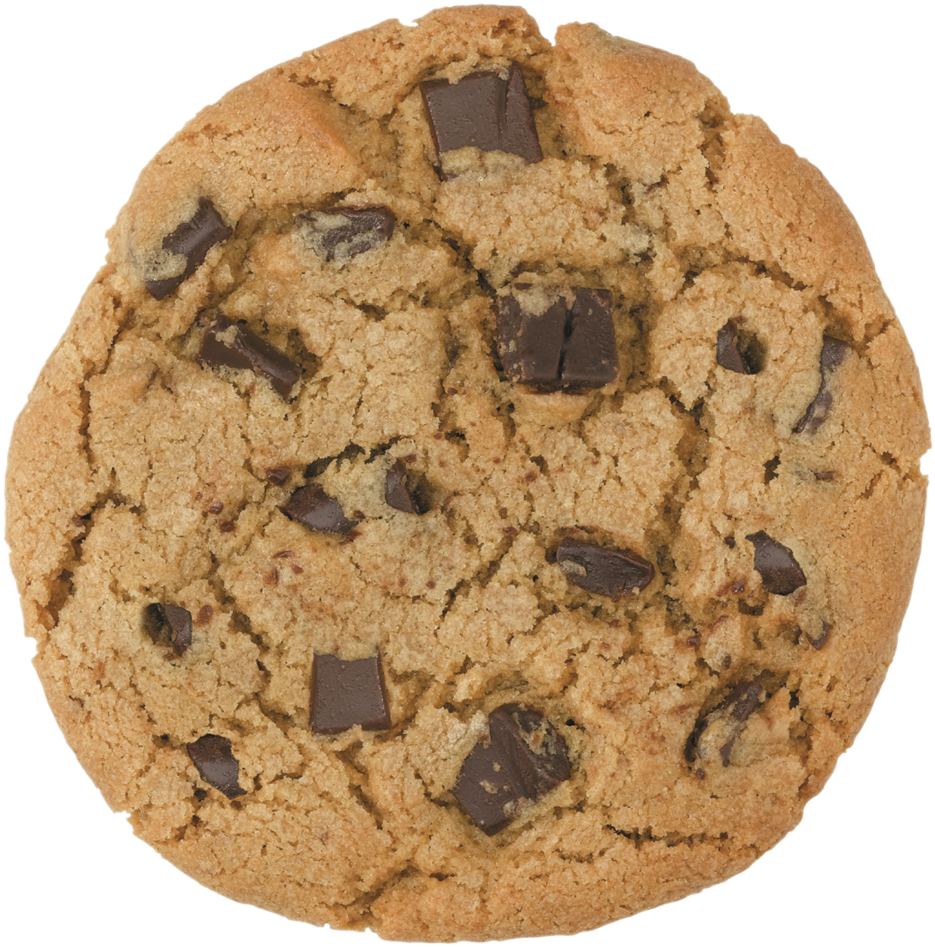

Comfy chocolate chip cookies

Ingredients
- 1 cup salted butter, softened
- 1 cup white (granulated) sugar
- 1 cup light brown sugar
- 2 tsp pure vanilla extract
- 2 large eggs
- 3 cups all-purpose flour
- 1 tsp baking soda
- 1/2 tsp baking powder
- 1 tsp sea salt
- 2 cups chocolate chunks
Steps
- Preheat oven to 375 degrees. Line a baking pan with parchment paper and set aside.
- In a separate bowl mix flour, baking soda, salt, baking powder. Set aside.
- Cream together butter and sugars until combined.
- Beat in eggs and vanilla until fluffy.
- Mix in the dry ingredients until combined.
- Add 12 oz package of chocolate chips and mix well.
- Roll 2 or 3 tbsp of dough time into balls and place them evenly spaced on your prepared cookie sheets. (alternately, use a small cookie scoop to make your cookies).
- Bake in preheated oven for approximately 8-10 minutes. Take them out when they are just starting to turn brown.
- Let them sit on the baking pan for 2 minutes before removing to cooling rack.
Head back home